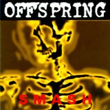

Top 100 Albums of 1990-1999 (Part Two: Individual Writers' Picks)
By No Ripcord Staff
 Morrissey
Morrissey  Rollins Band
Rollins Band  Sebadoh
Sebadoh  Cocteau Twins
Cocteau Twins  World Party
World Party  Depeche Mode
Depeche Mode  Madonna
Madonna  MF DOOM
MF DOOM  Tom Waits
Tom Waits  Ice Cube
Ice Cube  Hum
Hum  Tindersticks
Tindersticks  Polaris
Polaris  Bruce Springsteen
Bruce Springsteen  Arrested Development
Arrested Development  Cap’n Jazz
25 June, 2013 - 07:30 — No Ripcord Staff
Cap’n Jazz
25 June, 2013 - 07:30 — No Ripcord Staff
It's frustrating, isn't it? An album that you love, that you adore and you could listen to endlessly, but others just don't see it. What's wrong with those people? It happens to everyone, and here we give our writers the chance to make the case for records that no-one but them voted for. Do any of them correspond with your views? Maybe you could add your suggestions for overlooked favourites in the comments. Either way, enjoy.
[Bubbling Under] | [Writers' Picks] | [100-81] | [80-61] | [60-41] | [40-21] | [20-16] | [15-11] | [10-6] | [5-1]
Morrissey“Your Arsenal”
(HMV – 1992)
There’s a muscular Morrissey on the cover, and for once image matches content judging from the visceral power of the sound. The key was producer Mick Ronson, who sharpened the songs through a killer mix and keen attention to performance. Take for instance the album’s opener, You’re Gonna Need Someone On Your Side, which hits your chest with a barrage of sustained guitars and menacing bass as Morrissey swings above with jazz-crooner phrasing. Morrissey co-wrote the songs with Alain Whyte and M.E. Nevins, who seemed connected to his contrarian mind, serving portions of glam (Glamorous Glue), rockabilly (Certain People I Know), and dollops of Marr-like chord changes (Seasick, Yet Still Docked). Morrissey’s lyrics court controversy, metering out some bile (We’ll Let You Know) and some compassion (the often misunderstood The National Front Disco). His best since The Smiths’ days, Your Arsenal solidified Morrissey’s career. Angel Aguilar
Playlist: You’re The One For Me, Fatty
Rollins Band“The End Of Silence”
(Imago – 1992)
Some albums just show up at the right time, and when I’d found Rollins Band’s The End Of Silence, the pep talk it offered was something I needed to hear. And while the album resonates for me personally, Rollins Band’s third full-length is an intensified mix of King Crimson-sized rhythmic complexity and metal-infused blues, an oft-heavy by-product of catharsis and work ethic complete with Henry Rollins’ refusal to give listeners any less than his all. Bad times are met with responses like “deal with it” (What Do You Do) and “you gotta keep your self-respect” (Grip) over a soundtrack thick with some of the best rock music of the era, songs like Almost Real, Obscene and Just Like You still able to make my blood run cold. This is pure, therapeutic rage backed by one of the most criminally underrated bands in rock n’ roll. Sean Caldwell
Playlist: Just Like You
James
“Laid”
(Mercury – 1993)
It’s a shame that Laid never caught on like it deserved. James are probably the least-known group to be produced by Brian Eno and admittedly, a large portion of their work is forgettable attempts to fill the post-Smiths void. But Laid is a diamond in the rough, thirteen staggering songs where singer Tim Booth takes full control of his voice, acoustic numbers blend in fully with U2-esque anthems, and songs are exactly as sentimental as they can be before they become too sentimental. Eno’s production gives the sound breathing room, and guitar-keys interplay is particularly evocative throughout the album, and serious tracks like One Of The Three, with its religious lyrics, strike a great balance with the ridiculousness of songs like Laid or the sweeter Say Something. Neither the ’90s jangle-pop anthems that Britpop claimed as their own nor airy, reverb-heavy crooners get much better than they are on Laid. Forrest Cardamenis
Playlist: Sometimes
The Mountain Goats
“Sweden”
(Shrimper – 1995)
Why has Sweden stuck out to me over the throngs of Mountain Goats albums? Maybe it’s that cool Swedish flag on the cover? Or the fact that all the song titles are given alternative Swedish ones? Maybe it’s just the sheer irony of titling an album Sweden, but not featuring a single song about the country itself? However, to me, Sweden is sort of the precursor to the cleaner, studio sounds Darnielle would explore in his later career. The foundations are certainly laid out: the simple accompaniment of thudding bass guitar, harmonising vocals, and the discernible chime of Darnielle’s frantic strumming. The quality does vary track to track; certainly the shine of Neon Orange Glimmer Song is much more glossed up than the tape-distortion of Downtown Seoul. In any case, the potential can be heard, even if it’s obscured by the occasional hiss of a cheap tape recorder. Andrew Ciraulo
Playlist: Neon Orange Glimmer Song
Sebadoh“Bubble And Scrape”
(Sub Pop / Domino / City Slang – 1993)
As my tastes have broadened over the last decade, I find myself listening to less and less Sebadoh. The band clearly wrote some great songs, but their albums are generally disjointed affairs; the different songwriters tend to pull in opposing directions and democratic compromise generally prevails over sharp editing. Bakesale has some memorable moments but would really benefit from a few shots of Eric Gaffney weirdness. III boasts some of my all-time favourite Sebadoh cuts (The Freed Pig being the standout) but is bogged down by a fair amount of bloat. Bubble And Scrape, on the other hand, is lean and cohesive in comparison. It's the one I will never tire of. There are seventeen good-to-great songs here - how many other '90s indie rock abums can you say that about? David Coleman
Playlist: Sacred Attention
DJ Krush
“MiLight”
(Mo’ Wax / FFRR – 1997)
During the nineties there were some turntable artists that caught everyone’s eye through their experiments. DJ Shadow was probably the most prominent one, but DJ Cam, DJ Vadim and DJ Krush were also constructing their own language through decks, each incorporating their native backgrounds. 1997’s MiLight is the perfect Japanese interpretation of hip-hop music – a simple but forceful collection of Nippon beats. Jugoya, for example, is a beautiful blend of nature samples and deep, jazz-infected hip-hop beats. Mos Def appears dropping a rhyme in Shinjiro and Japanese MC Rino appears on the third track, Shin-Sekai, remanding us all that we are listening to a fierce example of what happened in underground Shibuya during the nineties. MiLight is a record to be listened to on headphones. Carlos Dávalos
Playlist: Jugoya
Cocteau Twins“Heaven Or Las Vegas”
(4AD – 1990)
General consensus might have it that Cocteau Twins were very much an eighties act; that their distinctive brand of ethereal dream-pop was a defining feature of the British indie landscape of that time. Yet they arguably reached their peak at the start of the subsequent decade with this, their sixth album. Somehow, very mixed circumstances in the band’s personal fortunes at the time (singer Liz Fraser’s recent motherhood; guitarist Robin Guthrie’s on-going drug addiction) provided the impetus to pull back from the obfuscation and deliver something more direct (the last time Fraser’s dazzlingly unique vocals had been quite so discernible, it was to considerably more moody, and not entirely successful, effect on their debut, Garlands), yet still full of the heartening beauty that they were renowned for. Mark Davison
Playlist: Heaven Or Las Vegas
World Party“Goodbye Jumbo”
(Papillon – 1990)
World Party’s second album saw sole member Karl Wallinger fully embrace his inner Beatle and was a set of wonderfully crafted pop songs that touched on the environment (Put The Message In The Box), use of religion for war (God On Your Side) and appreciating what you have (Thank You World). Alongside the references to 60s pop, Wallinger showed he could touch on soul and Prince-esque funk, while playing the whole thing pretty much by himself. Coming off the back of a debut album that had given him a Top 40 single in the States, Goodbye Jumbo somehow managed to commercially stall World Party. No matter, as the years since have failed to age it a jolt and alongside XTC’s Skylarking, is my choice of soundtrack for a lazy summer day. DC Harrison
Playlist: When The Rainbow Comes
Depeche Mode“Songs Of Faith And Devotion”
(Mute – 1993)
After the success of Violator, Depeche Mode were free to do whatever the hell they wanted. But rather than make a sequel to the electronic affair, they went as close to rock n’ roll as possible. Songs Of Faith And Devotion starts off with I Feel You, which is centred on a bluesy riff that’s second only to Personal Jesus. Dave Gahan’s desperate, passionate shouts propel the song forward through each line, a masterful vocal performance that continues on tracks like the gospel-tinged Condemnation. There are also a handful of unexpected instruments used on the record, such as uillean pipes in the Martin Gore sung Judas, a piano put through a guitar processor for Walking In My Shoes and a reverse keyboard on Mercy In You. Although it was the band’s last album with Alan Wilder, at least he went out with what is arguably Depeche Mode’s best record. Joe Marvilli
Playlist: I Feel You
Madonna“Ray Of Light”
(Maverick / Warner Bros. – 1998)
Released just before she turned 40, Ray Of Light was a musical milestone for Madonna: a creative and commercial peak. Her roots had always been in post-disco dance music but Ray Of Light was a new type of Madonna record, one where ethereal soundscapes merged with elements of trip-hop, progressive house and Eastern mysticism. The overall result balances heartfelt introspection with the pulsating sound of the late ‘90s dance scene and peaks with the spacey disco of Nothing Really Matters, the ocean baptism of Swim and the psychedelic swirl of the title track (her very own Higher State Of Consciousness). By moving towards more ambitious and complex music, Madonna surpassed herself. Ray Of Light is the pinnacle of her catalogue. Gary McGinley
Playlist: Ray Of Light
MF DOOM“Operation: Doomsday”
(Fondle ‘Em – 1999)
You hear that opening skit with all its Dr. Doom super-villain crap and think, “oh right, here’s another rapper with a grandiose sense of self-worth,” and your expectations go into freefall. Then the opening beat to Doomsday starts to purr, so soft and soulful. And in ten seconds, the album wins you round. With a jovial, experimental style, Operation: Doomsday has tracks that slow it up, speed it up, slow it up, speed it up and samples that range from Steely Dan to Scooby Doo. There’s a school of thought that rap has to be gangsta or political, but Operation: Doomsday is neither. That’s why it went out of print in the mid-‘00s. It didn’t sound like anything else, so the listening public rejected it. How stupid were they? James McKenna
Playlist: Doomsday
Tom Waits“Bone Machine”
(Island – 1992)
I’ve been to bars that have banned Waits from their jukeboxes, proclaiming him to be pretentious, unintelligible raspy-voiced bullshit. Often, people (well, let’s face it, just men) look at me suspiciously when I tell them I’m in the camp of true believers, totally unable to comprehend that a woman could be into the macabre, circus-freak, smoky-bar lounge act that is Tom Waits. But it’s true – he’s my desert island guy – and while Bone Machine is nowhere near the top of my list, it’s a strong record, full of Waits’ “mysterious brain jewels.” Minimalist compared to some of his more orchestral albums, Bone Machine has more of a vintage vibe (listen to the old phonograph blues of Jesus Gonna Be Here), but sacrifices none of the satisfying and unsettling weirdness that Tom Waits does best. If the sound of a creaking rocking chair doesn’t convert you, there’s no hope left. Gabbie Nirenburg
Playlist: Murder In The Red Barn
Ice Cube“Death Certificate”
(Priority / EMI – 1991)
Ice Cube had already created a fantastic album in 1990’s AmeriKKKa’s Most Wanted, but the rapid follow-up, Death Certificate, in 1991 served as an affirmation of just how talented a rapper Ice Cube was. The Bomb Squad’s dense production terrorism was replaced with smoother and funkier backing by Sir Jinx’s wide use of P Funk samples, but Ice Cube still sounds incredibly hungry, like he’s rapping for his life, be it rapping on No Vaseline in no uncertain terms what he wants to do to his former N.W.A bandmates or his disdain for the US Government and Army. It’s sad that he never managed to follow up the twin peaks of these two albums, and despite his recent commercial missteps this album proved what a gifted individual he was when on top of his game. Richard Petty
Playlist: No Vaseline
Silverchair
“Frogstomp”
(Murmur – 1995)
Silverchair emerged in the mid-nineties from Newcastle, Australia, with an onslaught of radio friendly grunge that punctuated fictional concepts with the tribulations of friends and hometown tragedies. Coming after the success of the Seattle grunge scene, Silverchair were able to use what had come before them to help them deliver an inspired record, but the similarities to what had come before it, and the inexperienced, youthful nature of the band led to media digs, such as ‘Silverhighchair’ or ‘Nirvana in Pyjamas’. The fact of the matter is though, that there is simply no limb of rock music, nor has there been for a while, that connects with a specific target audience as explicitly as the angst ridden, hard-hitting, candid songscapes that are the trademark of Frogstomp. I mentioned the band’s ages as well? They were fourteen at the time of the album’s recording. Defies belief. Carl Purvis
Playlist: Tomorrow
Hum“You’d Prefer An Astronaut”
(RCA – 1995)
Can a band be both metal and shoegaze at the same time? If not, nobody ever told Hum. Though the band’s guitars were tuned more in line with Pantera and influenced more bands like Deftones than the slew of dream pop newcomers each year, Hum’s use of volume and massive waves of distortion was much more in tune with Kevin Shields than Dimebag Darrell, foregoing aggression and bad-assery for timid romance and beauty. Sure, songs like The Pod and I Like Your Hair Long are more than fit to elicit moshpits, but more often than not, tracks like the buoyant Little Dipper, the queasy, lovestruck Why I Like The Robins, and of course, the group's only pseudo-hit, Stars, use walls of drop-D static to suspend songs well above the atmosphere, with singer Matt Talbot’s frail vocals making their sound seem all the more massive. Peter Quinton
Playlist: Why I Like The Robins
Tindersticks“The Second Tindersticks Album”
(This Way Up / London – 1995)
History seems to have forgotten that for a period during the mid ‘90s, Tindersticks were the critical darlings of the alternative music press. The Second Tindersticks Album confirms why – it invites you in, stokes the fire, pours you a (large) whisky, and regales you with stories of dastardly men, failing relationships, the ache of infidelity and dark, dark tragi-comedies. In a time of Britpop, Tindersticks were never going to top the charts; they were clothed in suits, their outlook was decidedly European and they wore their intelligence – and their emotions – on their well-tailored sleeves. Described as “snow on midnight roof tops” and “gorgeous as sin” by Melody Maker upon its release, The Second Tindersticks Album’s finely crafted blend of rich, orchestral chamber pop and literary storytelling comes to a head on My Sister, a nine-minute spoken-word epic not for the faint of heart. Joe Rivers
Playlist: My Sister
Polaris“Music From The Adventures Of Pete & Pete”
(Mezzotint – 1999)
Ask any American adult that grew up in the nineties what their favourite television show was and they’ll probably answer The Adventures Of Pete & Pete. While the show itself is still a cornerstone of oddball children’s programming, what many remember is how the show’s jangly soundtrack, performed by Miracle Legion offshoot Polaris, impeccably modelled the ideal image of American suburbia with its lingering, reverbed-out chords and fine-tuned country arpeggios. Naturally, a penchant of quirk resounds throughout, which adequately matched the eccentricity of the neighbours in Wellsville, but veiled in that surreal admission were richly melodious jangle pop tunes that could equally compare to all of R.E.M.’s I.R.S. oeuvre. That’s quite the accomplishment for a soundtrack to a kids’ show, yet what makes …Adventures… so memorable is how, no matter where you are, it instantly transports you to a time and place you wish you never had to leave. Juan Edgardo Rodriguez
Playlist: Ivy Boy
Bruce Springsteen“The Ghost Of Tom Joad”
(Columbia – 1995)
Bruce has a lot of strengths, obviously. He is THE great rock showman, has a voice that could bring down the walls of Jericho, and can wail on guitar when he wants to. But for me, his greatest skill of all is as a storyteller. When he picks up that acoustic guitar and fully inhabits a character there’s almost no one who can touch him. Like Nebraska, this record is filled with such moments. As the country prospered in the 90s, he was quick to realise that the US was building a new economy on the wasted ruins of industry and the backs of immigrants flooding in to get a piece of the dream. His boundless empathy overflows on this wonderful, overlooked record, and unless you’re ready to sit down, remain quiet and really listen, you might as well skip it. Alan Shulman
Playlist: The Line
The Offspring
"Smash"
(Epitaph – 1994)
At the tender age of 15, The Offspring were probably the first band to convince me I needed to buy a guitar - and while most of their albums have gradually fallen to the bottom of the CD pile, I still really enjoy blasting Smash every now and again. It was the first Offspring album to show signs of the more commercial direction they would eventually head in, but that actually works in its favour - tracks like Come Out And Play, Self Esteem and Gotta Get Away are effortlessly catchy without being clichéd or tacky. It’s full to the brim with great riffs, and Dexter Holland’s trademark squawk never fails to entertain. Joel Stanier
Playlist: Self Esteem
Muse
“Showbiz”
(Mushroom – 1999)
Listening back to Muse’s debut album, Showbiz, reminds you that Muse’s trademark sounds have always featured prominently in their music. The incorporation of classical piano, complex song structures and wailing falsetto vocals were as important to Muse at the time of their debut as they are today. But there are noticeable differences between Showbiz and some of Muse’s latter works. Perhaps the most important of these is that Showbiz illustrates what the band are capable of without relying on digital effects, dubstep beats or three-minute classical interludes. It showcases the Muse of a different era; when the music took priority over the image and the songs were consistently well-written. Craig Stevens
Playlist: Sunburn
Arrested Development“3 Years, 5 Months & 2 Days In The Life Of…”
(Chrysalis / EMI – 1992)
Massively popular upon its release, 3 Years, 5 Months & 2 Days In The Life Of… now has the status of a somewhat forgotten landmark of 90s hip-hop. Spawning three huge hit singles (People Everyday, Mr. Wendal and Tennessee) that were all but inescapable in 1992, the album was resolutely upbeat and positive, providing a riposte to the gangsta rap that was prevalent at the time. Equal parts Public Enemy and De La Soul, it combined funky beats and singalong choruses with lyrics that tackled issues of race and identity. It spearheaded a movement in Southern hip-hop, but sadly the potential for an Agrarian rap revolution was never fulfilled. David Wood
Playlist: Tennessee
Cap’n Jazz“Shmap’n Shmazz”
(Man With Gun – 1995)
I can’t say I’m surprised that an album of primal, incoherent teenage angst didn’t make the cut, but I truly think that in spite of its utter sprawling messiness – in fact, completely because of that, Cap’n Jazz were the best at teenage catharsis. Beneath its seeming disarray, it’s an incredibly tight, even virtuoso album, crescendoing and blasting at all the right moments, then calming down for Tim Kinsella’s unique bouts of psychedelic introspection. Cap’n Jazz quickly grew out of this teenage rebellion, diverging into a dizzying amount of (often unfairly overlooked) sub-groups – Joan of Arc, American Football, The Promise Ring, Owen, and (near-Cap’n Jazz reunion) Owls were all fronted by Cap’n Jazz members. Among them they’ve produced some fascinating avant-garde yet deeply thoughtful rock music, but nothing as anthemic or unrestrained as Cap’n Jazz. Stephen Wragg
Playlist: Oh Messy Life
Want to see the Top 100 countdown start for real? Step this way.